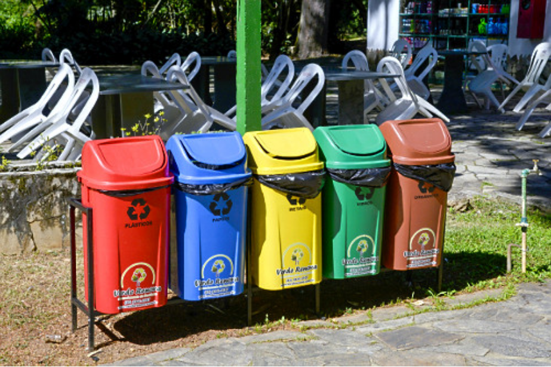
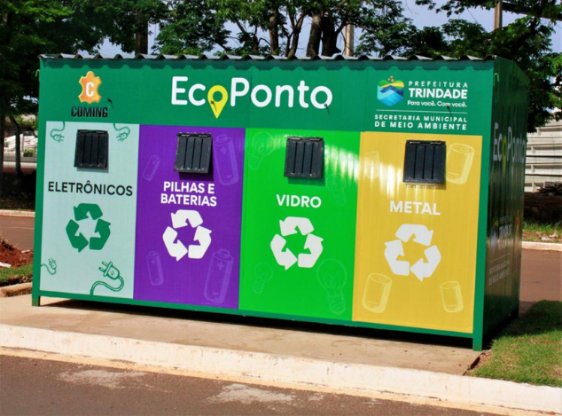
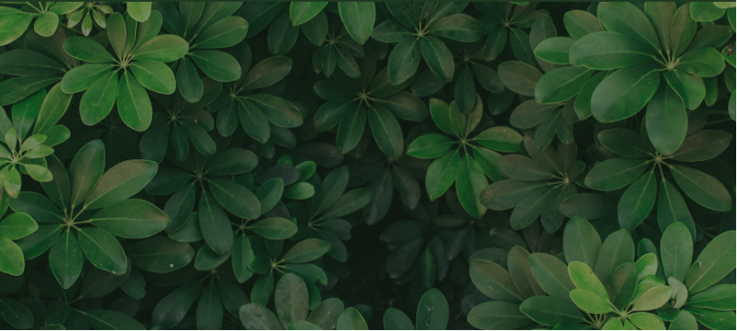
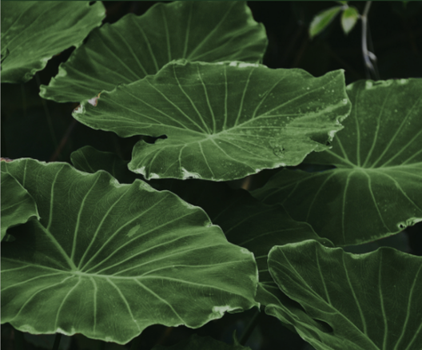

"O descarte consciente hoje garante um
futuro mais sustentável"
Descarte correto
Separar cada resíduo e destiná-lo ao lugar certo é um gesto simples que transforma o futuro. O descarte correto evita a contaminação do meio ambiente, protege a saúde de todos e devolve à natureza o que pode ser reaproveitado.
Coleta Seletiva
Em Lages, o descarte correto acontece por meio de contentores específicos e dos Ecopontos administrados pela Semasa, espalhados por toda a cidade.
- Contentores Azuis — recicláveis limpos, como papel, plástico e caixas de leite.
- Contentores Pretos — rejeitos orgânicos e materiais não recicláveis, como fraldas, papel higiênico e isopor sujo.

Ecopontos
Lages conta com 8 Ecopontos distribuídos pela cidade para o descarte voluntário de materiais recicláveis.
Materiais aceitos
- Vidro
- Metal
- Papelão
Importante: não descarte lixo orgânico nos Ecopontos.
Materiais cortantes
Objetos cortantes devem ser embalados em caixas de papelão ou jornal antes do descarte, garantindo a segurança dos coletores.
Alguns locais
- Bairro Popular (em frente à Semasa)
- Bairro Guarujá
- Bairro Coral
- Bairro Araucária

Móveis, Entulhos e Resíduos Volumosos
Normalmente, o contentor fica no estacionamento do Terminal Rodoviário Dom Honorato Piazera, podendo ser transferido para outros bairros.
Coleta Gratuita
A Semasa também realiza a coleta de materiais volumosos diretamente nas residências.
- Dias: quartas e quintas-feiras.
Existe um contentor de grande porte para descarte gratuito de:
- Sofás
- Colchões
- Restos de madeira
- Outros materiais volumosos

